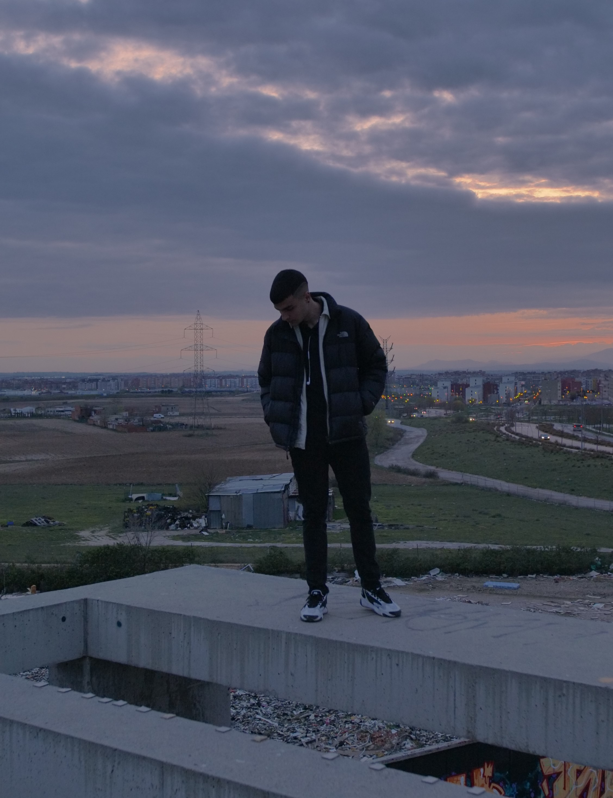

PABLOHQ
Sonando: Fuck That Pablo Hernández Quiroga es un cantante de Madrid que ha crecido en el barrio de Leganés. Tiene 22 años y lleva haciendo música desde 2020. Se inició en el rap en cuarto de la E.S.O. a raiz de haber leido Don Juan Tenorio, haciendo rimas en clase entre los compañeros, más tarde descubrió las batallas y comenzó a improvisar. tras ir al festival Madrid Salvaje, decidió empezar a escribir sus propias canciones. Siempre enfocado en el rap, pero en las últimas canciones ha estado explorando otros generos como son el pop rock.
Entre sus temas podemos encontrar: